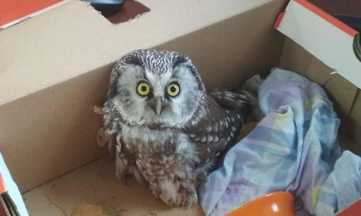

На набережной реки Мойки мужчина нашёл крошечную сову
В четверг утром, 3 октября, прогуливавшийся с собакой житель одного из домов на набережной реки Мойки нашёл маленькую совушку — она сидела, «замаскировавшись» в осенней листве. Летать она не могла, рассказал 78.ru спаситель птицы Дмитрий Велес

Подробности читайте на сайте 78.ru.